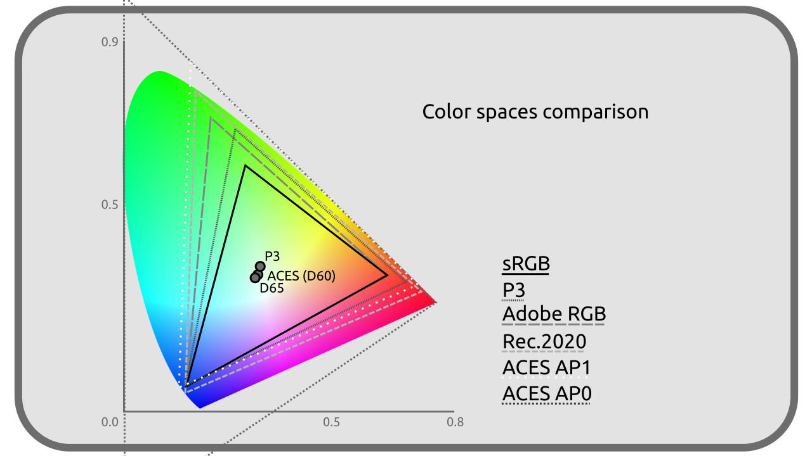
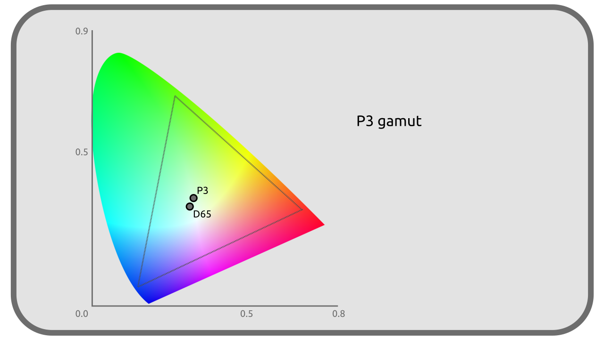
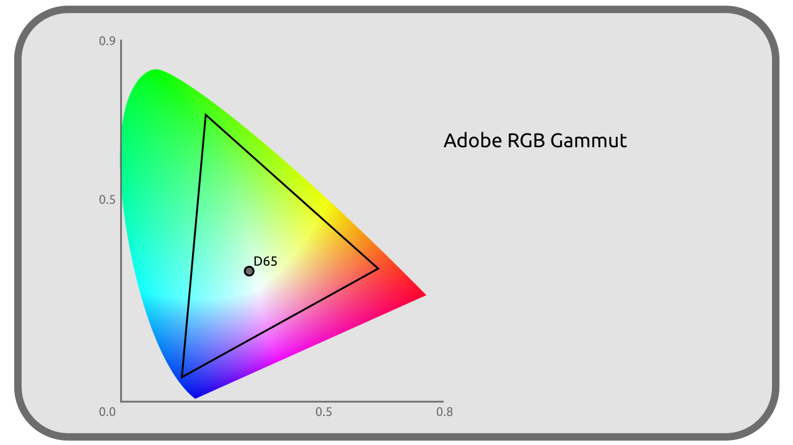

I.I - Selective list of color spaces¶
It would not be possible to list here all the color spaces available, but here is a selection useful in audiovisual production in 2021.

sRGB / CIE 61966-2-1 / IEC 61966-2-1¶
Display space, display-referred.
The sRGB (for standard RGB) is one of the most common spaces in computing; indeed, it is that of most computer screens, and is also used by extension for most image formats in a standard way (JPEG, PNG, TGA…).
It dates from 1996.

Primaries¶
These primaries are the same as those in Rec. 709.
| R | G | B | |
|---|---|---|---|
| X | 0,64 | 0,30 | 0,15 |
| Y | 0,33 | 0,60 | 0,06 |
| Z | 0,03 | 0,1 | 0,79 |
White¶
| White | |
|---|---|
| x | 0,3127 |
| y | 0,3290 |
| CIE | D65 |
| lum. | 80 cd/m² |
Transfer curve¶
sRGB uses a transfer curve very close on average to a Gamma 2.2, with actually a linear transfer for linear luminances below 0.0031308 then a shifted Gamma 2.4.
Linear RGB¶
Color space, scene-referred.
Linear RGB is a variation of sRGB, identical in all points except for the transfer curve which is* linear. It is mainly used as a workspace (scene referred) when we need a better simulation of light (rendering engines, blending modes in compositing …) and to simplify calculations. It is found in particular in EXR* files.
Note
Often software mistakenly talks about linear SRGB, or worse, IEC 61966-2-1 linear, but it is not sRGB since the transfer curve is different.
Rec. 601 / ITU-R BT.601 / CCIR 601¶
Display space, display-referred.
Rec. 601 is the complete standard for interlaced video for Standard Definition Television SDTV. It is no longer used but was used in the PAL and NTSC standards.
Its PAL version is very close to sRGB.
Primaries¶
| R | G | B | |
|---|---|---|---|
| X (NTSC) | 0,63 | 0,31 | 0,155 |
| Y (NTSC) | 0,34 | 0,595 | 0,007 |
| Z (NTSC) | 0,03 | 0,095 | 0,775 |
| X (PAL) | 0,64 | 0,29 | 0,15 |
| Y (PAL) | 0,33 | 0,60 | 0,06 |
| Z (PAL) | 0,03 | 0,11 | 0,79 |
Note
In PAL, the primaries of Rec. 601 are very close to those of sRGB; only the Gx changes (0.29 instead of 0.3)
White¶
| White | |
|---|---|
| x | 0,3127 |
| y | 0,3290 |
| CIE | D65 |
| lum. | 100 cd/m² |
Transfer curve¶
Gamma 2.4.
Rec.709 / UIT-R BT 709¶
Display space, display-referred.
Rec. 709 is the standard of the High Definition Television, HDTV and dates from 1990. It is generally found in the current video formats (mp4…)
It is very close to sRGB, only the transfer curve changes (and its white point must be a little more intense).
Primaries¶
These primaries are the same as the sRGB ones.
| R | G | B | |
|---|---|---|---|
| X | 0,64 | 0,30 | 0,15 |
| Y | 0,33 | 0,60 | 0,06 |
| Z | 0,03 | 0,1 | 0,79 |
White¶
| White | |
|---|---|
| x | 0,3127 |
| y | 0,3290 |
| CIE | D65 |
| lum. | 100 cd/m² |
Transfer curve¶
Close to a Gamma 2.4 or Gamma 2.35 according to the recommendations.
Rec.2020 / UIT-R BT.2020¶
Display space, display-referred.
Rec. 2020 is the standard for Ultra High Definition Television, UHDTV and dates from 2012.
Primaries¶
| R | G | B | |
|---|---|---|---|
| X | 0,708 | 0,17 | 0,131 |
| Y | 0,292 | 0,797 | 0,046 |
| Z | 0,0 | 0,033 | 0,823 |
White¶
| White | |
|---|---|
| x | 0,3127 |
| y | 0,3290 |
| CIE | D65 |
| lum. | variable |
Transfer curve¶
The same as Rec.709 close to a Gamma 2,4, but more precise.
DCI-P3¶
Display space, display-referred.
DCI-P3 was created as a transition to Rec. 2020 and for movie projection. It is used by some TVs and computer monitors, and even more recently some phones/tablets.

Primaries¶
| R | G | B | |
|---|---|---|---|
| X | 0,68 | 0,265 | 0,15 |
| Y | 0,32 | 0,69 | 0,06 |
| Z | 0,00 | 0,045 | 0,79 |
White¶
| White | |
|---|---|
| x | 0,3140 |
| y | 0,3510 |
| CIE | N/A |
| lum. | 48 cd/m² |
Transfer curve¶
Gamma 2,6
Display P3¶
Display space, display-referred.
The Display P3 is a variation of the DCI-P3 adapted to be closer to (and better compatible with) the sRGB (and thus to make screens able to display both more easily). It keeps the primaries (and thus the wider gamut) of the DCI-P3 but uses the White point and the Transfer curve of the sRGB.
Primaries¶
| R | G | B | |
|---|---|---|---|
| X | 0,68 | 0,265 | 0,15 |
| Y | 0,32 | 0,69 | 0,06 |
| Z | 0,00 | 0,045 | 0,79 |
White¶
| White | |
|---|---|
| x | 0,3127 |
| y | 0,3290 |
| CIE | D65 |
| lum. | 80 cd/m² |
Transfer curve¶
That of the sRGB close on average to a Gamma 2.2.
ACES¶
ACES stands for Academy Color Encoding System, and represents a system comprising 5 color spaces designed by the Academy of the Oscars specifically for audiovisual production, released in 2014 for its first version.
These 5 spaces share the same White point, close to D60; they use two sets of Primaries named AP0 or AP1. The AP0 Primaries are outside the visible colors (and thus the CIE XYZ): they are the closest theoretical Primaries encompassing all visible colors. The AP1 Primaries are closer to the usual RGB Primaries and to the screens and projectors, making them more practical in the production of images.

Primaries (AP0)¶
| R | G | B | |
|---|---|---|---|
| X | 0,7347 | 0,0 | 0,001 |
| Y | 0,2653 | 1,0 | -0,77 |
Primaries (AP1)¶
| R | G | B | |
|---|---|---|---|
| X | 0,713 | 0,165 | 0,128 |
| Y | 0,293 | 1,830 | 0,044 |
White¶
| White | |
|---|---|
| x | 0,32168 |
| y | 0,33767 |
| CIE | proche de D60 |
| lum. | infinie |
ACES2065-1¶
Storage space.
ACES2065-1 is the main space of the ACES system. It is designed to store any color information in a non-destructive way and is usable in the long term with future new spaces. It thus encompasses all visible colors and is larger than the CIE XYZ. Its use is mainly theoretical.
It is intended to be used in openEXR images or MXF videos.
It is linear.
ACEScg¶
Workspace, scene-referred.
ACEScg is similar to ACES2065-1 but uses the AP1 Primaries. It is intended primarily for 3D renderers and compositing.
Its standard image storage format is openEXR.
ACEScc¶
Workspace, scene-referred.
ACEScc is similar to ACEScg (with AP1 Primaries) but uses a non-linear Transfer curve, more convenient for color correction and calibration.
Adobe RGB¶
Display space, display-referred and working space.
Adobe RGB was designed in 1998 for graphic designers working on screen but whose work is intended for printing. It is close to sRGB, but the green primary has been shifted to include more colors that can be reproduced in CMYK printing. Its Transfer curve is also slightly different.

Primaries¶
| R | G | B | |
|---|---|---|---|
| X | 0,64 | 0,21 | 0,15 |
| Y | 0,33 | 0,71 | 0,06 |
White¶
| White | |
|---|---|
| x | 0,3127 |
| y | 0,3290 |
| CIE | D65 |
| lum. | 160 cd/m² |
Transfer curve¶
Gamma 563/256 soit 2,199 218 75.
Sources et références
- sRGB on Wikipedia
- Specifications sRGB on color.org
- Specifications BT.601 on color.org
- Rec. 709 on Wikipedia
- Specifications BT.709 on color.org
- Rec. 2020 on Wikipedia
- Specifications BT.2020 on color.org
- DCI-P3 on Wikipedia
- Specifications DCI-P3 on color.org
- ACES on Wikipedia
- acescolorspace.com/